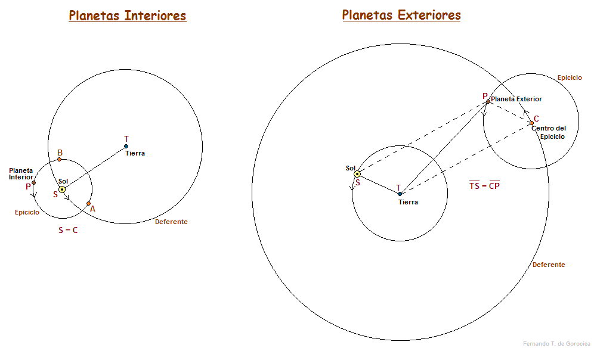

<!DOCTYPE html>
<html lang="es"></html>
<head>
    <meta charset="utf-8" />
    <meta name="viewport" content="width=device-width, initial-scale=1.0">
    <title>Modelos del Sistema solar</title>
    <style>
        .contendor{
            background-color:bisque;
            padding: 35px;
        }
    </style>
    <link rel="stylesheet" href="estiloHA.css">

</head>
<body>
    <div class="contendor">
        <h1><p style="text-align: center;">Modelos del Sistema solar</p></h1>
        <a href="index.html">Volver al inicio</a>
    </div>
    <div class="informacion">
        <h2>
            Geocentrismo
            <p style="font-size: medium; font-weight: normal;">Teoría sostenida durante el siglo XVI, que sostenía que la tierra era el centro del universo y por ende esta se mantenia estatica</p>
            <p style="font-size:large;">Representantes</p>
            <p style="font-size: medium; font-weight: normal;">
                * Pitágoras de Samos y sus Seguidores en un movimiento filosófico y religioso<br>* Aristoteles y Platon
            </p>
        <div class="Geocentrismo">
            <div class="Tierra"></div>
            <div class="Luna"></div>
            <div class="Mercurio"></div>
            <div class="Venus"></div>
            <div class="El_sol"></div>
            <div class="Marte"></div>
            <div class="Jupiter"></div>
            <div class="Saturno"></div>
        </div>
        <p class="separar"></p>
        <h2>
            <p style="font-size: medium; font-weight: normal;">(Representacion que no implementa el sistema de epiciclos que se usaban para explicar las orbitas de los planetas)</p>
            <p style="font-size: large;">Epiciclos</p>
        </h2>
        
        <h2>
            Heliocentrico
            <p style="font-size: medium; font-weight: normal;">En el siglo XVI, Nicolás Copérnico propuso un modelo en el que el Sol se encontraba en el centro del Universo y la Tierra guirando sobre sí misma y alrededor del Sol, al igual que todos los demás objetos celestes.</p>
            <p style="font-size:large;">Representantes</p>
            <p style="font-size: medium; font-weight: normal;">
                * Galileo Galilei<br>* Nicolás Copérnico<br>* Johannes Kepler que concluyó que el sol no era el centro geometrico
            </p>
        </h2>
        <div class="Geocentrismo">
            <div class="HEl_sol"></div>
            <div class="HMercurio"></div>
            <div class="HVenus"></div>
            <div class="HTierra"></div>
            <div class="HLuna"></div>
            <div class="HMarte"></div>
            <div class="HJupiter"></div>
            <div class="HSaturno"></div>
            <div class="HUrano"></div>
            <div class="HNeptuno"></div>
        </div>
        <p class="Hseparar"></p>
    </div>
</body>


